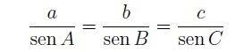
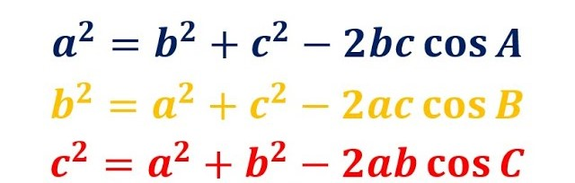
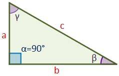
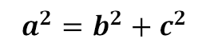

Introducción
En muchos problemas de mecánica es necesario resolver triángulos escalenos para analizar fuerzas, movimientos o trayectorias. Para eso, usamos la ley del seno y la ley del coseno, que nos ayudan a encontrar lados y ángulos cuando no tenemos un triángulo rectángulo. Este proyecto muestra cómo aplicar estas leyes de forma clara y visual.
Ley del Seno
En un triángulo cualquiera:

Se aplica la ley de Senos con la siguiente formula:

Casos en que se aplica la Ley del Seno:
- ASA (Ángulo-Lado-Ángulo): Conocemos dos ángulos y el lado comprendido entre ellos. Podemos encontrar el resto de lados y ángulos.
- AAS (Ángulo-Ángulo-Lado): Conocemos dos ángulos y un lado no comprendido entre ellos. Se calcula el ángulo faltante y luego los lados.
- SSA (Lado-Lado-Ángulo opuesto, caso ambiguo): Conocemos dos lados y un ángulo opuesto a uno de ellos. Puede haber dos soluciones posibles para el triángulo, una única solución o ninguna.
Ley del Coseno
Para cualquier triángulo escaleno:

Es una generalización del teorema de Pitágoras, útil cuando conoces dos lados y el ángulo entre ellos.
Casos en que se aplica la Ley del Seno:
- ASA (Ángulo-Lado-Ángulo): Se conocen dos ángulos y el lado comprendido entre ellos. Permite calcular los lados y el ángulo faltante.
- AAS (Ángulo-Ángulo-Lado): Se conocen dos ángulos y un lado que no está entre ellos. Se calcula el ángulo faltante y los lados restantes.
- SSA (Lado-Lado-Ángulo opuesto): Se conocen dos lados y un ángulo opuesto a uno de ellos. Puede tener una, dos o ninguna solución (caso ambiguo).
Teorema de Pitágoras
El Teorema de Pitágoras se aplica exclusivamente a triángulos rectángulos. Establece una relación entre los catetos y la hipotenusa:
Este teorema dice que en un triángulo rectángulo:

donde a es la hipotenusa (el lado opuesto al ángulo recto) y b y c son los catetos.
¿Cuándo se aplica?
- Cuando el triángulo es rectángulo (tiene un ángulo de 90°).
- Cuando conoces dos lados y quieres calcular el tercero.
- Es una base para muchas fórmulas y conceptos en trigonometría.